The copier
A photoreal copy machine rendered in Blender, with its own sounds. Put a clip on the glass and it prints the real thing — the waveform, or every note — with its data: tempo, length, notes or levels.
A copy machine for your clips. Audio in, MIDI out, split into its parts; MIDI in, audio out, through real instruments — and every copy drags straight into your DAW.
This page describes Freally Flipcopy version 1.0: everything on it is in 1.0, and nothing planned for after 1.0 is on it.
Every figure is counted from the app itself. Nothing is estimated, and nothing is rounded up.
Everything Flipcopy does today is free, for everyone: no paid tier, no subscription, no account and no trial that runs out. The copies you make are yours, as far as the files you copied were yours to use.
A photoreal copy machine rendered in Blender, with its own sounds. Put a clip on the glass and it prints the real thing — the waveform, or every note — with its data: tempo, length, notes or levels.

Dropping a clip only places it on the glass. Nothing is copied until you press START; STOP cancels a scan and HOME clears the glass, so nothing happens that you did not ask for.

A loop comes out as the parts in it — drums on their own lanes, bass, melody, a countermelody where there is one, and the chord progression — one page and one MIDI file each, from a single scan. A part that is not there gets no page. Or copy a sung line on its own.

A MIDI file played through any of the 1,648 instruments Freally MIDI Master uses — a sound for each part and a drum machine for the drums — and printed as one audio page per part, plus the whole mix. WAV, AIFF, FLAC or MP3, at the sample rate and bit depth you choose.

Every page wears a lime-green frame: grab it and drop the file on a track. Or drag the whole stack — All parts lands as one track per part, Complete mix as one clip. Each file is named the way your DAW should show it, such as Loop - Bassline - 120 BPM - C# Minor.

Every copy is a real, verified file in your Copies folder — numbered, and never moved, overwritten or deleted, so a project that uses it never loses it. Page back through every copy you have made, save one again, show it in its folder, or put it back on the glass.

A file browser from Freally Oscillate: up to 128 folders, back and forward, tags, stars and a keyboard walk. The preview shows the real waveform or the notes, plays MIDI through the same sound the copy uses, and plays a finished stack in sync, with an A/B against the original.

Open any copy in a piano roll, one tab per part, edited exactly as in Freally MIDI Master. Hear it through any instrument, shape it on a mixer with realistic knobs, play it through your own drum kit or one of your samples, and send the edit back to the glass to print as a new copy.

The copier's own screen holds the copy settings: which parts, the grid and swing, the tempo and where it comes from, the sound for each part, the file format and the tail. A build gate checks that each setting really changes the copy.

CLAP and VST3 on Windows, macOS and Linux, AU on macOS, and a standalone app for working without a DAW — and for Pro Tools, by dragging. Saved with your project, safe in many instances at once, and able to scan straight from a track.

Five skins, each a raised chassis rendered in Blender and shared by every Freally app, in light and dark, beside plain light and dark modes. The copier is rendered again for each one, so it always stands on its own ground.

No telemetry and no model. Every copy is made by classic signal processing, and the plugin and the app never go online. The one exception is an update check that stays off unless you switch it on, run by a separate program.
Freally Flipcopy 1.0 next to the commercial tools producers use to turn audio into MIDI and MIDI into audio. Every cell for another product comes from its maker's own pages, checked on 1 October 2026, and prices are US list prices as of October 2026.
| Feature | Freally Flipcopy 1.0 | Melodyne 5 Studio | RipX DAW PRO | Ableton Live 12 Suite | Logic Pro | AnthemScore 6 Professional |
|---|---|---|---|---|---|---|
| Price (USD, October 2026) | Free today | $699 | $198 | $749 | $199.99 | $39 |
| Turns audio into MIDI | has it | has it | has it | has it | has it | has it |
| One loop split into its parts, each its own MIDI file | has it | does notseparates notes, not instruments | has itby instrument | partlystems first, then each by hand | partlystems first, then each by hand | partly |
| Turns MIDI into audio through built-in instruments | has it | not verified | has it | has it | has it | does notplays it, but exports no audio |
| Drag the result straight onto a DAW track | has it | partlyin some DAWs, through ARA | not verified | not verified | not verified | not verified |
| Works inside a DAW as a plugin | has itCLAP · VST3 · AU | has itVST3 · AU · AAX · ARA | partlyVST3/ARA · AudioSuitesends audio to its own app | does notits own DAW only | does notits own DAW only | does notstandalone app only |
| Windows, macOS and Linux | has itWindows · macOS · Linux | partlyWindows · macOS | partlyWindows · macOS | partlyWindows · macOS | partlymacOS | has itWindows · macOS · Linux |
| No AI or machine learning | has it | not verified | does not | does notuses it for stem separation | does not | does not |
The short version: only Flipcopy has all of it — both directions, the parts, the drag, the plugin, all three systems and no AI.
Where they win: Melodyne Studio, RipX, AnthemScore and Ableton Live can write out the individual notes of a chord from a polyphonic recording (Melodyne only from an instrument recorded on its own); Flipcopy gives you the progression instead, and says so. RipX, Ableton Live Suite and Logic Pro also separate a mix into audio stems, which Flipcopy 1.0 does not.
Flipcopy's column is version 1.0, which is not out yet, and its price is today's: Flipcopy is free today, and future versions may be sold. The other products change too; this table is as of 1 October 2026.
Onsets, pitch tracking, chroma and a deterministic renderer, with no model anywhere. The same file, the same settings and the same version give the same copy, byte for byte, every time.
Every page is drawn from the bytes of the file it drags. The notes, tempo and length on the paper are the notes, tempo and length that land on your track.
No blank pages and no guesses dressed up as a transcription. Chords say they are a progression, a clip too long for the glass is refused with its length rather than cut, and a sung line left alone says so.
No telemetry and no cloud. Your files and your copies never leave your computer, and a build gate fails if networking code is ever added to the plugin or the app.
The plugin reads your project's tempo and never changes it, and every tempo Flipcopy prints names where it came from: the loop, the file, its name, your DAW, or you.
The copier's sounds and the preview play quietly through the plugin, and never into a bounce. While they are silent, your track's audio passes through untouched.
Stated plainly, because a feature list that hides its gaps is not worth reading. This page is version 1.0, and Flipcopy is built one rung at a time: not everything on it is built yet. Each rung on the road to 1.0 is marked with its state.
There are no downloads before version 1.0, and none on this page.